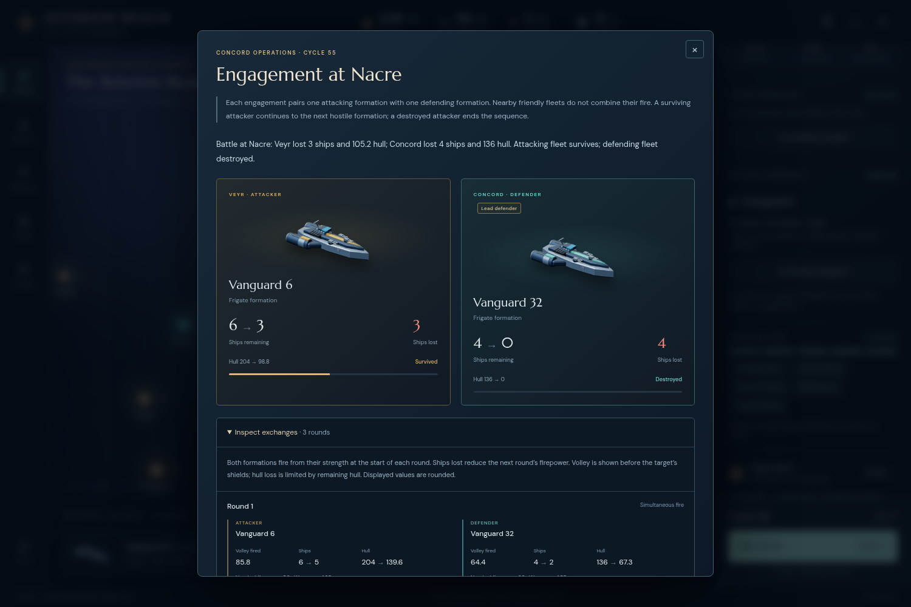
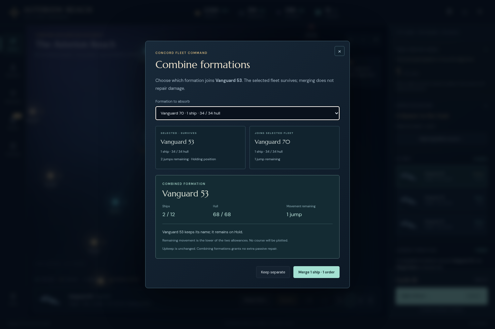

The race became a war
Early diplomacy was explicit: the Concord initiated Veyr and Khar trade, and accepted a funded Choir offer at cycle 8. All three Concord beacons were operational at cycle 51. Veyr and Choir broke their trade treaties and declared war during 53→54. Their subsequent attacks forced real fleet assembly, repairs and industrial changes.
AI-turn engagements retain the operations cycle in their reports and appear in the following arrival briefing. The table uses the displayed arrival cycle.

Recorded volleys and shield modifiers explained why the initial garrison lost and informed the relief decision.
The chooser made the surviving identity, hull total, Hold state and reduced movement explicit before payment.Three paid repairs restored damaged survivors; passive repair forecasts showed the remaining shared recovery. Eighteen quick commissions and fourteen paid merges were made through the UI. Neither rebuilding nor merging was automatic.
By cycle 65, prolonged-war peace settlements were available. Paying 60 credits and one order to each enemy secured binding truces and withdrew the visible Veyr force from Kepler. The final alignment payment then completed the campaign at cycle 66. Khar remained a trade partner throughout.
Evidence, without reconstructed history masquerading as play
The original evidence is frozen. Every game mutation occurred through visible controls, including end-cycle confirmation. Observer-safe projections supplied current own assets, charted geography and locally visible fleets. No save edits, resource grants, engine commands, policy automation, rollback or browser recovery were used during play.
Provenance and error accounting
Immutable build: 47e037308271ff3d3ac0d1fc870a889cdf0a67c4, served at http://127.0.0.1:5208. Exact asset fingerprints are in frozen-build.json. The actual frozen guide predates later release copyediting.
Sixteen actual UI downloads, 592 successful interaction receipts, 65 completed cycles, 64 decision notes, 24 screenshots, seven driver errors and zero browser errors are retained. Interaction totals include inspection and navigation; they are not game-order totals or independent samples.
- Cycle 1: attempted navigation while a colonization confirmation was pending.
- Cycle 15: an unavailable fleet selector after the Ark was consumed.
- Cycle 52→53: a fifth quickbar fleet selector timed out while an end-cycle request was mistakenly issued. Only the research selection succeeded; intended Hold and commission happened at actual 53.
- Cycle 56: one invalid numeric selector and one incorrect details-class selector during report inspection.
- Cycle 66: two unscoped selectors selected a hidden underlying ending control. Modal-scoped controls then worked.
The screenshot named cycle66-reopened-retained-battle-rounds.png captures the menu after those driver errors. The correct evidence is cycle66-retained-battle-rounds-verified.png.
There is no untouched cycle-55 or pre-relief cycle-56/57 UI export. Actual 56/57 saves are after relief; actual cycle61.json is before relief and the later cycle61 export is after it. Any independently reconstructed checkpoint must stay labeled derived and match later actual exports.
Independent replay is being prepared separately. This report makes no causal claim that a particular raid used Stage 20’s new absorption helper. Later AI diagnostics, if performed, are separate evidence. One manually played seed does not establish a win rate or a general difficulty estimate.